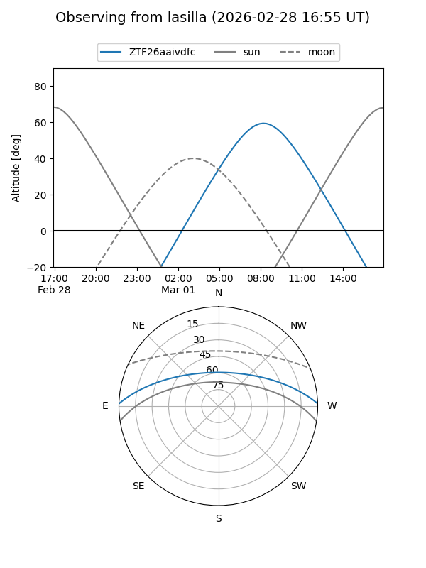
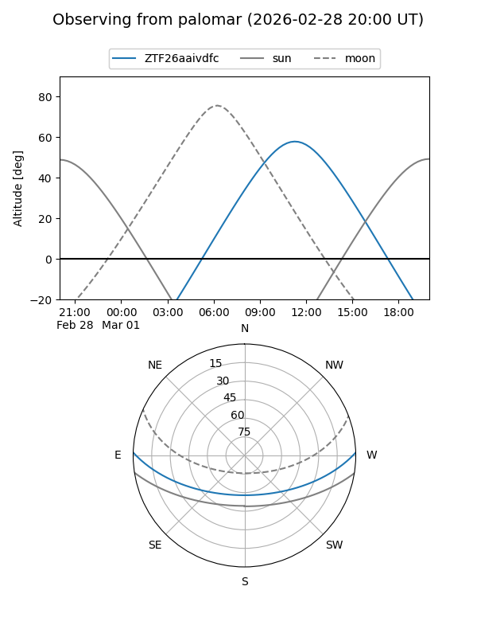

ZTF26aaivdfc
Target ZTF26aaivdfc at 2026-02-28 12:51
Aliases and brokers:
FINK: link
Lasair: link
ALeRCE: link
alt names
ZTF26aaivdfc (ztf,fink_ztf)
Coordinates:
equatorial (ra, dec) = 211.2181,+1.37742
equatorial (HMS+DMS) = 14:04:52.34,+01:22:38.72
galactic (l, b) = (340.3708,+58.80484)
Flags:
Photometry:
last ztfg=19.99
1 ztfg detections
Lightcurve
Visibility


Additional plots